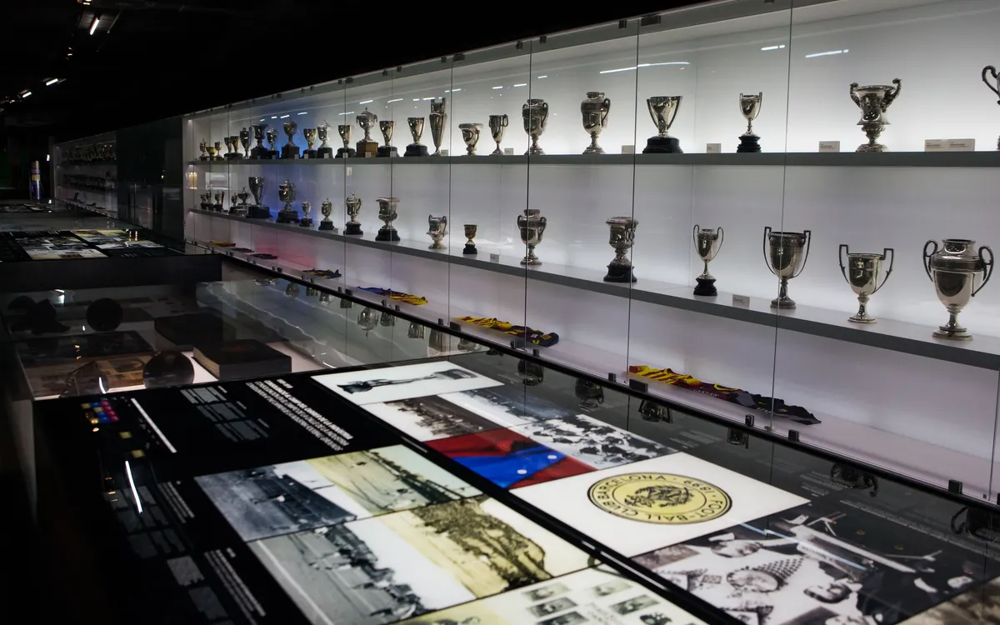

Titel und Trophäen

Bild: Der Champions-League-Pokal (Quelle: Wikimedia Commons, CC BY 2.0)
Der FC Barcelona ist einer der erfolgreichsten Fussballvereine der Welt. Insgesamt hat der Klub über 100 offizielle Titel gewonnen. Davon stammen die meisten aus dem spanischen Fussball, aber auch international konnte Barca grosse Erfolge feiern. Besonders die Champions League und die Klub-Weltmeisterschaft gehören zu den wertvollsten Trophäen im Schrank.
Nationale Titel
Die spanische Meisterschaft hat Barca insgesamt 28 Mal gewonnen, zuletzt in der Saison 2024/25 unter Trainer Hansi Flick. Damit liegt der Klub nur knapp hinter dem ewigen Rivalen Real Madrid. Bei der Copa del Rey ist Barca mit 32 Triumphen sogar Rekordsieger und der Pokal wird im Volksmund auch scherzhaft Copa Barca genannt. Die spanische Supercopa, ausgetragen zwischen Meister und Pokalsieger, hat der Klub 14 Mal in die Vitrine gestellt.
Internationale Titel
Auf europäischer Bühne ist die Champions League die Königsdisziplin. Barca hat sie fünfmal gewonnen und gehört damit zu den erfolgreichsten Klubs der Geschichte. Hinzu kommen drei Klub-Weltmeisterschaften und mehrere UEFA Super Cups. Der erste Triumph im wichtigsten Europapokal gelang 1992 unter Trainer Johan Cruyff im Londoner Wembley-Stadion gegen Sampdoria Genua.
Die wichtigsten Champions-League-Titel im Detail
| Jahr | Trainer | Finalgegner | Ergebnis |
|---|---|---|---|
| 1992 | Johan Cruyff | Sampdoria Genua | 1:0 |
| 2006 | Frank Rijkaard | FC Arsenal | 2:1 |
| 2009 | Pep Guardiola | Manchester United | 2:0 |
| 2011 | Pep Guardiola | Manchester United | 3:1 |
| 2015 | Luis Enrique | Juventus Turin | 3:1 |
Das vielleicht grösste Jahr in der Klubgeschichte war 2009. Damals gewann Barca unter Pep Guardiola sechs Titel innerhalb eines Kalenderjahres - das sogenannte Sextuple. Kein anderer europäischer Klub hat dies je geschafft. Es war die Krönung einer der besten Mannschaften, die der Fussball je gesehen hat.